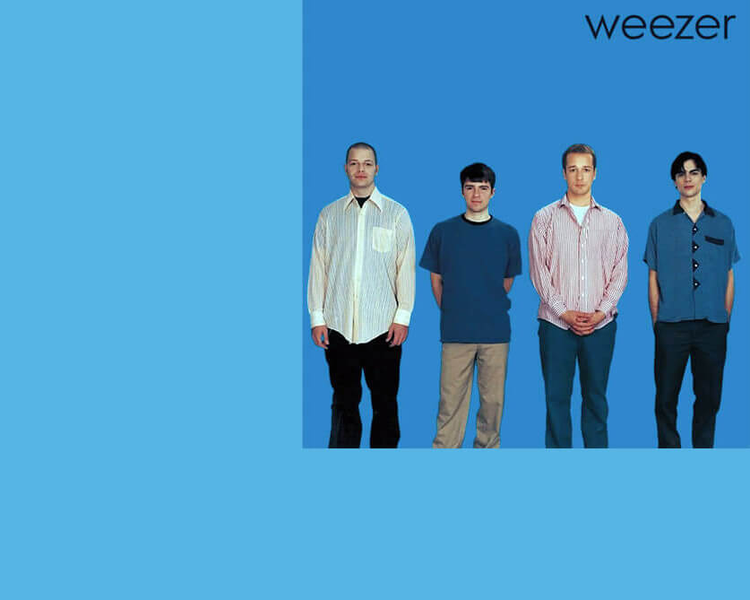

Pour cet exercice, vous devez écrire du HTML et du CSS afin de recréer l’album bleu de Weezer en utilisant notamment la propriété position.
Aperçu du résultat 👇

Matériel
Dossier de départ
Couleurs 🎨
#56b4e3
#0088cb
#000000
Médias
Logo
Wilson
Cuomo
Sharp
Bell
Requis
La couleur de fond de la page doit être bleu pâle, tandis que l'album en soit doit-être bleu foncé.
L'album doit être en haut à droite complètement de la fenêtre (peu importe la dimension de la fenêtre) et avoir une dimension de 500x500px.
Téléchargez les images fournises, ajoutez les au dossier img de votre dossier de départ et utilisez ces images pour la suite du projet.
Le logo doit être positionné à 15px du haut et de la droite de l'album ↗️.
Chaque membre doit être positionné au bas de l'album. (Inspirez vous de l'image de référence en début de page afin de les positionner adéquatement).
Ambiance
Notes de cours
Position
static, relative, absolute, fixed, sticky
Display
block, inline, inline-block, none